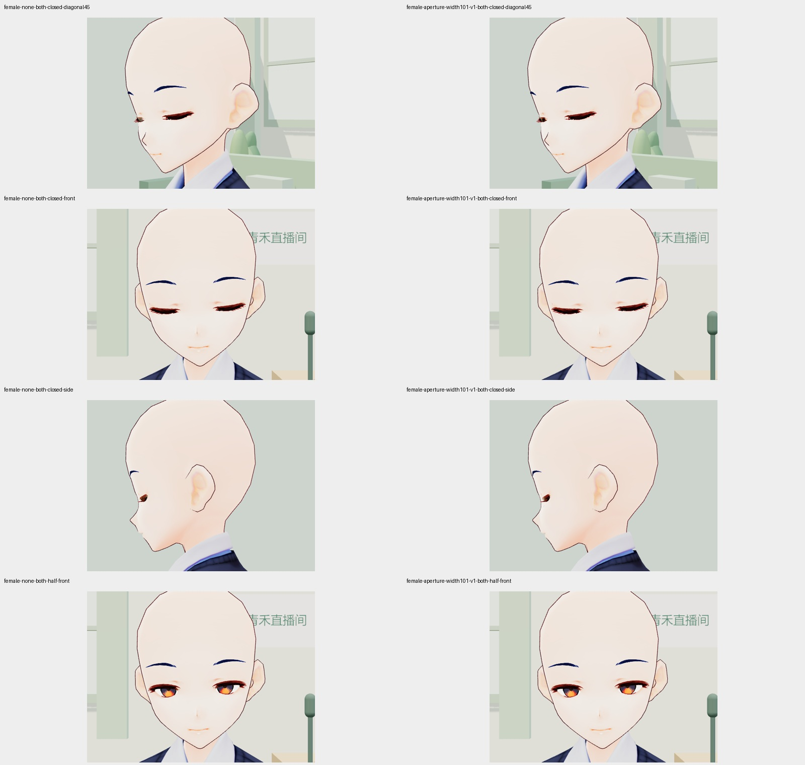

844e273263a7 · 眼裂宽+1%单端点待验
原男女、两态有限范围；静态闭眼/注视是明确诊断，影片用真实自动眨眼与讲话。技术检查不替代观感验收。
正常材质原尺寸同姿图
旧新局部对照及全时段2fps抽审
女性 happy+blink 睫毛短暂淡化在原位/候选都存在；同组合静态已核，详见RESULT。
原位密集帧 · 候选密集帧 · 同组合结论

静图裁剪仅供查看，完整PNG保留；2fps抽帧不是连续人类验收，不能排除瞬间闪变。
结论与限制 · 原始实际记录 · 影片时钟/图索引